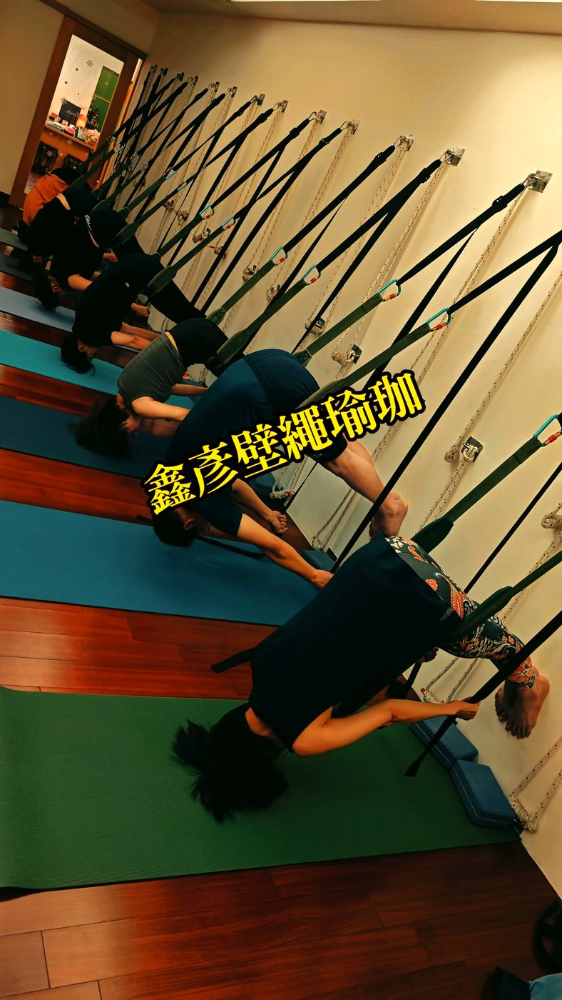

膝蓋卡卡，問題可能在髖

你有沒有過這種經驗：蹲下去綁鞋帶、或是上下樓梯的時候，膝蓋卡卡的、有點緊、有點痠，可是去照了 X 光又說沒什麼大問題？別急著怪膝蓋。很多時候，膝蓋只是那個「被拖下水」的角色，真正卡住的，其實在它上面的髖關節。
膝蓋很老實，它不太會轉
先幫膝蓋講句公道話。膝關節其實是個很單純、很盡責的關節，它主要負責彎和伸，設計上就不太適合大幅度的旋轉。它上面是能往各個方向轉動的髖關節，下面是靈活的踝關節，膝蓋剛好夾在中間，是一個負責「穩定」的角色。
問題就出在這裡：當它上下的鄰居活動度不夠時，動作的角度總得從某個地方生出來，膝蓋就只好硬著頭皮去「代償」它本來不擅長的旋轉。久了，你感覺到的就是卡、緊、痠。
往上游看：髖太緊、臀太弱
走路、蹲下、爬樓梯，這些動作看起來是腿在動，其實幕後主角是髖。這裡有兩個常見的狀況：
- 髖關節活動度不足：久坐讓髂腰肌長時間縮短、變緊，髖沒辦法好好彎、好好轉，動作的落點就往下掉到膝蓋。
- 臀肌無力、睡著了：臀大肌本來該是穩住大腿、控制膝蓋方向的大力士，但久坐讓它「失憶」，膝蓋內外的小肌肉只好扛下不屬於自己的工作。
膝蓋常常不是壞掉，而是在替上面的髖「還債」——把髖鬆開、把臀叫醒，膝蓋往往就跟著輕鬆了。
壁繩怎麼幫忙？把髖打開、給膝蓋一條保護
要改善髖的活動度、又要練到臀，對很多人來說最卡的地方是：沒力氣、又怕膝蓋更痛，動作一做就歪掉。壁繩瑜伽有意思的地方在於，繩子可以借力、可以幫你把重量分散掉，讓你在髖真正被打開的位置停留，而不是靠膝蓋硬撐。老師會在旁邊看你的排列，確保力量從髖和臀出來，而不是全壓在膝蓋上。想更了解久坐讓臀部「睡著」是怎麼回事，可以先看看久坐讓屁股失憶、怎麼把它叫醒這篇，會更有畫面。

今天就能做的一個小練習
試試「坐姿抬膝喚醒臀」。找一張穩固的椅子坐好，背打直，雙腳踩地。慢慢吸一口氣，吐氣時想像用「屁股後側」的力量，把一邊的膝蓋輕輕往上抬離地面一點點，停 2 秒，感覺臀部有在出力，再放下換邊。一邊做 8 到 10 次，配合深呼吸、不憋氣。
要老實說：這個動作不是做一次膝蓋就不卡了。它是在幫你重新找回「用臀部發力」的感覺，需要規律地練、慢慢累積，身體才會把這條線路接回來。急不得，但值得。
本文為體態與姿勢的一般衛教與練習分享，非醫療診斷或治療。若有疼痛、舊傷或特殊病史，請先諮詢合格醫療專業人員。